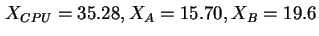
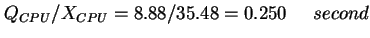
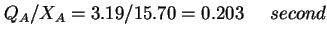

Next: กฎเวลาตอบสนองทั่วไป (General Response Time
Up: กฎของ Little
Previous: กฎของ Little
Contents
Index
ถ้าค่าเฉลี่ยความยาวคิว ในตัวอย่างที่ผ่านมา มีค่าเท่ากับ 8.88, 3.19, และ 1.40 ที่ตัวประมวลผลกลาง CPU, ดิสก์ A, และ ดิสก์ B, ตามลำดับ จงหาเวลาตอบสนองของอุปกรณ์ต่างๆ
จากตัวอย่างที่ผ่านมาค่าอัตราความสำเร็จของแต่ละอุปกรณ์จะเท่ากับ

และข้อกำหนดความยาวคิวจากโจทย์เท่ากับ

โดยใช้กฎของ Little, เวลาตอบสนองของอุปกรณ์จะเท่ากับ
 |
 |
 |
(7.44) |
 |
|
 |
(7.45) |
 |
|
 |
(7.46) |
Vara Varavithya
2002-03-09